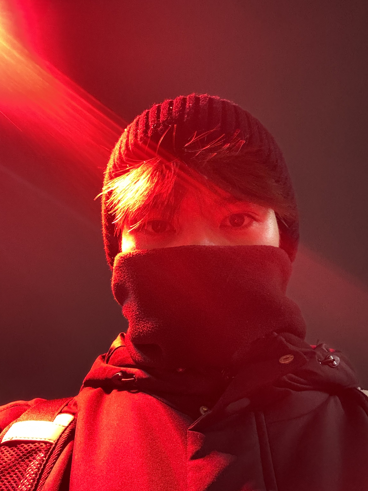
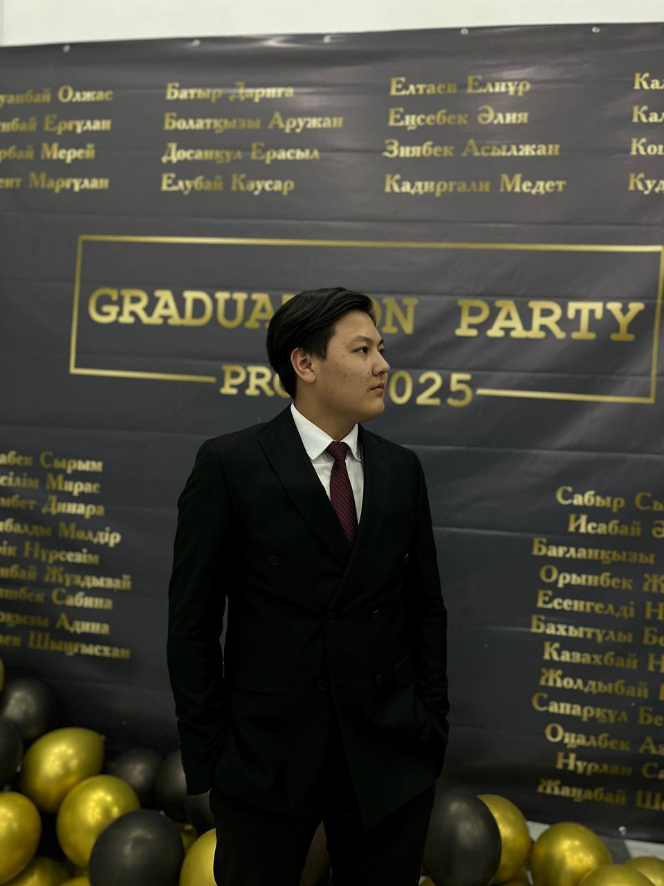

The people behind the pixels
Meet the
collective.
Three collaborators, three different ways of seeing, and one shared belief: the best work feels both useful and alive.

Development / systems
↗02Mansur
Builds the structure that makes ideas work in the real world.

Design / direction
↗03Yerasyl
Shapes visual language, interfaces and the details people remember.

Strategy / storytelling
↗Ansar
Connects the big idea to the audience, the story and the moment.